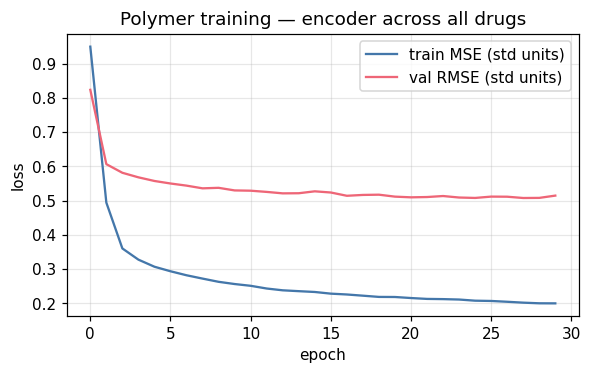
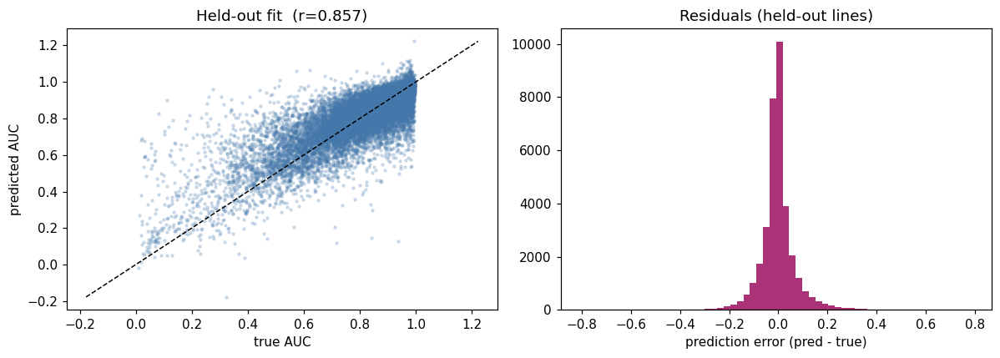
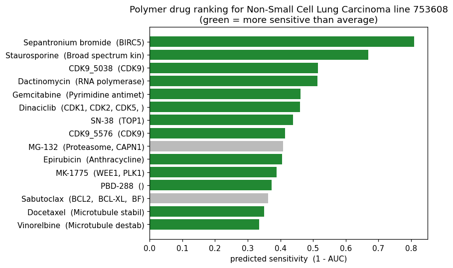
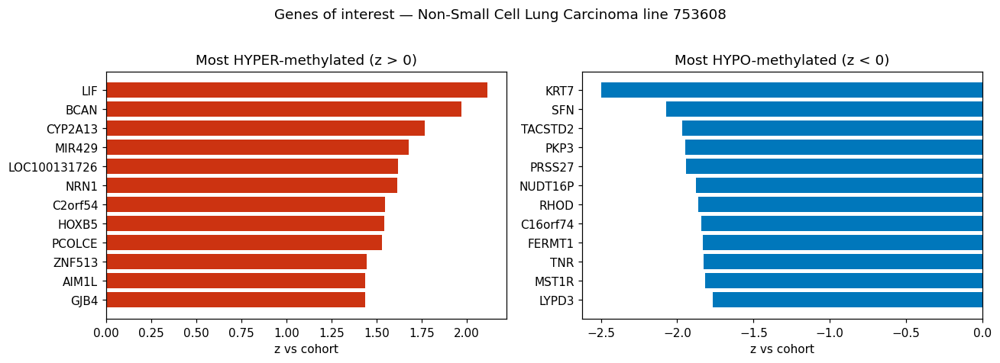
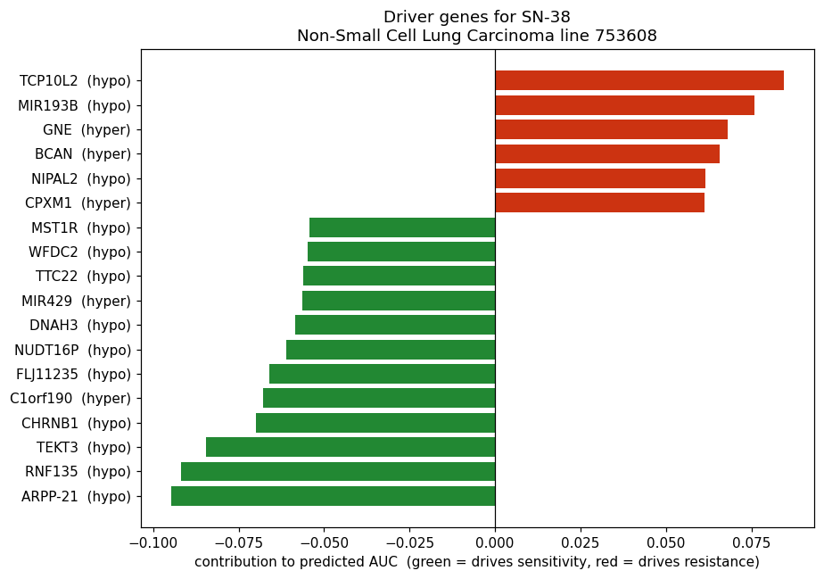

§01 — Polymer · the per-patient engine
Predict every drug for a methylome — and the genes that drive it.
The product, in one notebook. Given a tumor or cell-line methylome, Polymer predicts the response (AUC) to every drug and ranks them — then explains why: the genes that are hyper- or hypo-methylated in this sample and push the predicted response up or down. Research-use today; a methodology demo on open GDSC data, not a clinical device.
the pipeline
methylome
→ encoder (pretrained across all drugs)
→ rank 286 drugs
→ hyper/hypo genes
→ driver genes (why)
§02 — Stage 1 · Load & split
Load the methylome, drug response, and build a patient-blind split.
Three inputs: gene-level methylation (the predictor), promoter methylation (for the hyper/hypo annotation), and GDSC2 drug AUCs (the outcome). We split on cell lines — so every test “patient” is a sample the model has never seen.
import os
os.environ.setdefault("MPLCONFIGDIR", os.path.join(os.getcwd(), ".mplcache"))
import numpy as np, pandas as pd
import torch, torch.nn as nn
from scipy.stats import pearsonr, spearmanr
import matplotlib.pyplot as plt
from strata.data import gdsc
SEED = 1337
N_GENES = 3000 # top-variance gene-level features
EMB, HID = 32, 256
EPOCHS, BATCH, LR = 30, 4096, 2e-3
VAL_FRAC = TEST_FRAC = 0.15
torch.manual_seed(SEED); np.random.seed(SEED)
plt.rcParams["figure.dpi"] = 110
print("Polymer demo — torch", torch.__version__)Polymer demo — torch 2.3.0
gene = gdsc.load_gdsc_methylation_genelevel(); gene.index = gene.index.astype(str)
prom = gdsc.load_gdsc_methylation_promoter(); prom.index = prom.index.astype(str)
drug = gdsc.load_gdsc_drug_response()
anno = gdsc.load_gdsc_annotations()
# drug metadata (target / pathway) for nicer labels
try:
meta = (pd.read_csv("gdsc2_merged.csv", usecols=["DRUG_NAME", "PUTATIVE_TARGET", "PATHWAY_NAME"])
.groupby("DRUG_NAME").first())
except Exception:
meta = pd.DataFrame(columns=["PUTATIVE_TARGET", "PATHWAY_NAME"])
lines = gene.index.to_numpy()
line_pos = {c: i for i, c in enumerate(lines)}
d = drug[drug["COSMIC_ID"].astype(str).isin(set(lines))].dropna(subset=["auc"]).copy()
d["COSMIC_ID"] = d["COSMIC_ID"].astype(str)
d = d.groupby(["COSMIC_ID", "drug_name"], as_index=False)["auc"].mean()
drug_names = sorted(d["drug_name"].unique())
drug_pos = {dn: i for i, dn in enumerate(drug_names)}
n_lines, n_drugs = len(lines), len(drug_names)
li = d["COSMIC_ID"].map(line_pos).to_numpy()
di = d["drug_name"].map(drug_pos).to_numpy()
y = d["auc"].to_numpy(float)
rng = np.random.default_rng(SEED)
order = rng.permutation(n_lines)
n_te, n_va = int(n_lines * TEST_FRAC), int(n_lines * VAL_FRAC)
test_l, val_l = set(order[:n_te]), set(order[n_te:n_te + n_va])
tr = ~np.isin(li, list(test_l | val_l)); va = np.isin(li, list(val_l)); te = np.isin(li, list(test_l))
train_line_mask = ~np.isin(np.arange(n_lines), list(test_l | val_l))
print(f"{n_lines} lines | {n_drugs} drugs | {len(y):,} (line,drug) pairs")
print(f"split: train={train_line_mask.sum()} lines | val={len(val_l)} | test={len(test_l)}")
print(f"gene-level: {gene.shape} | promoter: {prom.shape}")1055 lines | 286 drugs | 235,748 (line,drug) pairs split: train=739 lines | val=158 | test=158 gene-level: (1055, 14608) | promoter: (614, 17181)
§03 — Stage 2 · Train the encoder
Pretrain one methylation encoder across all 286 drugs.
Top-variance genes are selected on train lines only and z-scored with train statistics — no leakage. Each drug is a learned embedding, so predicted AUC = drug_bias + ⟨encoder(methylome), drug_embedding⟩. We watch the train/val curves, then check the fit on held-out lines against a per-drug-mean baseline.
# features: top-variance genes (train-selected), z-scored on train
Mfull = gene.to_numpy(np.float32)
var = Mfull[train_line_mask].var(0)
panel = np.argsort(var)[::-1][:N_GENES]
panel_genes = [str(gene.columns[j]) for j in panel]
X = Mfull[:, panel]
mu = X[train_line_mask].mean(0); sd = X[train_line_mask].std(0); sd[sd == 0] = 1.0
Xz = torch.tensor((X - mu) / sd)
ymu, ysd = y[tr].mean(), y[tr].std() + 1e-8
yz = torch.tensor((y - ymu) / ysd, dtype=torch.float32)
li_t, di_t = torch.tensor(li), torch.tensor(di)
class Polymer(nn.Module):
def __init__(self, n_feat, n_drugs):
super().__init__()
self.encoder = nn.Sequential(
nn.Linear(n_feat, HID), nn.ReLU(), nn.BatchNorm1d(HID), nn.Dropout(0.3),
nn.Linear(HID, EMB))
self.drug_emb = nn.Embedding(n_drugs, EMB)
self.drug_bias = nn.Embedding(n_drugs, 1)
nn.init.normal_(self.drug_emb.weight, std=0.1); nn.init.zeros_(self.drug_bias.weight)
def forward(self, li, di):
ce = self.encoder(Xz[li])
return self.drug_bias(di).squeeze(1) + (ce * self.drug_emb(di)).sum(1)
net = Polymer(N_GENES, n_drugs)
opt = torch.optim.Adam(net.parameters(), lr=LR, weight_decay=1e-5)
loss_fn = nn.MSELoss()
tr_idx = np.where(tr)[0]
@torch.no_grad()
def predict(mask_idx):
net.eval()
return net(li_t[mask_idx], di_t[mask_idx]).numpy() * ysd + ymu
tr_curve, va_curve = [], []
va_idx, te_idx = np.where(va)[0], np.where(te)[0]
for ep in range(EPOCHS):
net.train(); perm = tr_idx[rng.permutation(len(tr_idx))]
ep_loss = []
for s in range(0, len(perm), BATCH):
b = torch.tensor(perm[s:s+BATCH]); opt.zero_grad()
loss = loss_fn(net(li_t[b], di_t[b]), yz[b]); loss.backward(); opt.step()
ep_loss.append(loss.item())
tr_curve.append(np.mean(ep_loss))
vp = predict(va_idx); va_curve.append(np.sqrt(np.mean((y[va]-vp)**2)) / ysd) # std units
if ep % 5 == 0 or ep == EPOCHS-1:
print(f"epoch {ep:2d} train MSE={tr_curve[-1]:.3f} val RMSE(std)={va_curve[-1]:.3f}")
plt.figure(figsize=(6,3.4))
plt.plot(tr_curve, label="train MSE (std units)", color="#4477aa")
plt.plot(va_curve, label="val RMSE (std units)", color="#ee6677")
plt.xlabel("epoch"); plt.ylabel("loss"); plt.legend(); plt.grid(alpha=0.3)
plt.title("Polymer training — encoder across all drugs"); plt.show()epoch 0 train MSE=0.949 val RMSE(std)=0.823 epoch 5 train MSE=0.294 val RMSE(std)=0.550 epoch 10 train MSE=0.251 val RMSE(std)=0.529 epoch 15 train MSE=0.228 val RMSE(std)=0.524 epoch 20 train MSE=0.215 val RMSE(std)=0.509 epoch 25 train MSE=0.207 val RMSE(std)=0.512 epoch 29 train MSE=0.200 val RMSE(std)=0.514

# held-out fit vs the per-drug-mean baseline
test_pred = predict(te_idx)
drug_mean_tr = pd.Series(y[tr]).groupby(pd.Series(di[tr])).mean()
glob = y[tr].mean()
base = np.array([drug_mean_tr.get(dd, glob) for dd in di[te]])
def rmse_r(yt, p): return np.sqrt(np.mean((yt-p)**2)), pearsonr(yt, p)[0]
b_rmse, b_r = rmse_r(y[te], base)
m_rmse, m_r = rmse_r(y[te], test_pred)
# personalization (de-meaned within-line)
dm_te = base
rhos = []
for L in test_l:
mk = li[te_idx] == L
if mk.sum() >= 10 and np.ptp(test_pred[mk]-dm_te[mk]) and np.ptp(y[te][mk]-dm_te[mk]):
rhos.append(spearmanr(test_pred[mk]-dm_te[mk], y[te][mk]-dm_te[mk]).correlation)
print(f"per-drug baseline RMSE={b_rmse:.4f} r={b_r:.3f}")
print(f"Polymer RMSE={m_rmse:.4f} r={m_r:.3f} ({(b_rmse-m_rmse)/b_rmse*100:+.1f}% RMSE)")
print(f"personalized within-line rho (de-meaned) = {np.nanmean(rhos):+.3f}")
fig, ax = plt.subplots(1, 2, figsize=(11, 4))
ax[0].scatter(y[te], test_pred, s=4, alpha=0.2, color="#4477aa")
lims = [min(y[te].min(), test_pred.min()), max(y[te].max(), test_pred.max())]
ax[0].plot(lims, lims, 'k--', lw=1); ax[0].set_xlabel("true AUC"); ax[0].set_ylabel("predicted AUC")
ax[0].set_title(f"Held-out fit (r={m_r:.3f})")
ax[1].hist(test_pred - y[te], bins=60, color="#aa3377")
ax[1].set_xlabel("prediction error (pred - true)"); ax[1].set_title("Residuals (held-out lines)")
plt.tight_layout(); plt.show()per-drug baseline RMSE=0.0943 r=0.757 Polymer RMSE=0.0746 r=0.857 (+20.9% RMSE) personalized within-line rho (de-meaned) = +0.489

§04 — Stage 3 · Rank every drug
Score all 286 drugs for one held-out patient.
Pick a held-out cell line as a stand-in patient, push its methylome through the encoder once, and dot it against every drug embedding. Rank by predicted AUC (lower = more sensitive). Green bars are drugs predicted better for this patient than average — that is personalization, not just raw potency.
# choose the held-out line with the most measured drugs (good ground-truth coverage)
cand = sorted(test_l, key=lambda L: -(li[te_idx] == L).sum())
PATIENT = cand[0]
cid = lines[PATIENT]
ctype = anno.reindex([cid])["cancer_type"].iloc[0] if cid in anno.index else "Unknown"
@torch.no_grad()
def score_all_drugs(line_idx):
net.eval()
ce = net.encoder(Xz[line_idx:line_idx+1]) # (1, EMB)
s = net.drug_bias.weight.squeeze(1) + (ce * net.drug_emb.weight).sum(1)
return s.numpy() * ysd + ymu # predicted AUC per drug
pred_auc = score_all_drugs(PATIENT)
rank = pd.DataFrame({
"drug": drug_names,
"pred_auc": pred_auc,
"avg_auc": [drug_mean_tr.get(i, glob) for i in range(n_drugs)],
})
rank["vs_avg"] = rank["pred_auc"] - rank["avg_auc"]
rank["target"] = rank["drug"].map(lambda d: meta["PUTATIVE_TARGET"].get(d, "") if d in meta.index else "")
rank = rank.sort_values("pred_auc").reset_index(drop=True)
print(f"PATIENT: line {cid} ({ctype})\nTop 10 predicted-sensitive drugs:\n")
print(rank.head(10)[["drug","pred_auc","vs_avg","target"]].to_string(
index=False, formatters={"pred_auc":"{:.3f}".format, "vs_avg":"{:+.3f}".format}))
top = rank.head(15).iloc[::-1]
colors = ["#228833" if v < 0 else "#bbbbbb" for v in top["vs_avg"]]
plt.figure(figsize=(8, 5))
plt.barh(top["drug"] + " (" + top["target"].fillna("").str.slice(0,18) + ")", 1 - top["pred_auc"], color=colors)
plt.xlabel("predicted sensitivity (1 - AUC)")
plt.title(f"Polymer drug ranking for {ctype} line {cid}\n(green = more sensitive than average)")
plt.tight_layout(); plt.show()PATIENT: line 753608 (Non-Small Cell Lung Carcinoma)
Top 10 predicted-sensitive drugs:
drug pred_auc vs_avg target
Sepantronium bromide 0.190 -0.007 BIRC5
Staurosporine 0.331 -0.071 Broad spectrum kinase inhibitor
CDK9_5038 0.485 -0.016 CDK9
Dactinomycin 0.487 -0.106 RNA polymerase
Gemcitabine 0.538 -0.110 Pyrimidine antimetabolite
Dinaciclib 0.539 -0.039 CDK1, CDK2, CDK5, CDK9
SN-38 0.561 -0.199 TOP1
CDK9_5576 0.586 -0.004 CDK9
MG-132 0.592 +0.066 Proteasome, CAPN1
Epirubicin 0.595 -0.104 Anthracycline

§05 — Stage 4 · Genes of interest
Which genes are hyper- or hypo-methylated in this patient?
The patient's z-score for each panel gene is its standardized input, so it directly says how hyper- (z > 0) or hypo- (z < 0) methylated that gene is versus the population. We line up the promoter beta for the same genes as the focal view.
z = Xz[PATIENT].numpy() # standardized betas = hyper/hypo score
raw_beta = X[PATIENT] # patient's raw gene-level beta
prom_row = prom.loc[cid] if cid in prom.index else None
gene_status = pd.DataFrame({
"gene": panel_genes, "z": z, "beta": raw_beta,
"cohort_mean": mu,
})
gene_status["promoter_beta"] = [float(prom_row[g]) if (prom_row is not None and g in prom_row.index
and np.isfinite(prom_row[g])) else np.nan
for g in panel_genes]
hyper = gene_status.sort_values("z", ascending=False).head(12)
hypo = gene_status.sort_values("z").head(12)
print(f"Most HYPER-methylated genes in line {cid} (vs cohort):")
print(hyper[["gene","z","beta","cohort_mean","promoter_beta"]].to_string(
index=False, formatters={c:"{:.3f}".format for c in ["z","beta","cohort_mean","promoter_beta"]}))
fig, ax = plt.subplots(1, 2, figsize=(12, 4.2))
ax[0].barh(hyper["gene"][::-1], hyper["z"][::-1], color="#cc3311")
ax[0].set_title("Most HYPER-methylated (z > 0)"); ax[0].set_xlabel("z vs cohort")
ax[1].barh(hypo["gene"][::-1], hypo["z"][::-1], color="#0077bb")
ax[1].set_title("Most HYPO-methylated (z < 0)"); ax[1].set_xlabel("z vs cohort")
fig.suptitle(f"Genes of interest — {ctype} line {cid}", y=1.02)
plt.tight_layout(); plt.show()Most HYPER-methylated genes in line 753608 (vs cohort):
gene z beta cohort_mean promoter_beta
LIF 2.113 0.618 0.339 NaN
BCAN 1.970 0.868 0.627 NaN
CYP2A13 1.768 0.609 0.337 NaN
MIR429 1.679 0.887 0.632 NaN
LOC100131726 1.619 0.943 0.704 NaN
NRN1 1.612 0.585 0.363 NaN
C2orf54 1.547 0.874 0.683 NaN
HOXB5 1.540 0.671 0.477 NaN
PCOLCE 1.530 0.857 0.659 NaN
ZNF513 1.442 0.585 0.396 NaN
AIM1L 1.437 0.907 0.688 NaN
GJB4 1.435 0.840 0.651 NaN

§06 — Stage 5 · Why this drug?
Driver genes = gradient attribution × methylation deviation.
For the top pick we take the gradient of its predicted AUC with respect to the input methylation and multiply by the patient's deviation. That product is each gene's first-order contribution: negative means its (hyper/hypo)methylation drives sensitivity, positive drives resistance — an auditable, gene-level rationale tied directly to the prediction.
# Showcase the most PERSONALIZED pick: among the top-25 predicted-sensitive drugs,
# the one most below its population average (largest negative vs_avg). Override freely.
TARGET_DRUG = rank.head(25).sort_values("vs_avg").iloc[0]["drug"]
d_idx = drug_pos[TARGET_DRUG]
net.eval()
x = Xz[PATIENT].clone().detach().requires_grad_(True)
ce = net.encoder(x.unsqueeze(0))
score_std = net.drug_bias.weight[d_idx] + (ce * net.drug_emb.weight[d_idx]).sum()
score_std.backward()
grad = x.grad.numpy() # d(pred_std_AUC)/d(z_gene)
contrib = grad * x.detach().numpy() # per-gene contribution to predicted AUC
drivers = pd.DataFrame({
"gene": panel_genes, "contribution": contrib, "z": z,
"promoter_beta": gene_status["promoter_beta"].values,
})
drivers["methylation"] = np.where(drivers["z"] > 0, "hyper", "hypo")
# most sensitivity-driving (most negative contribution = lowers predicted AUC)
sens = drivers.sort_values("contribution").head(12)
res = drivers.sort_values("contribution", ascending=False).head(6)
print(f"WHY {TARGET_DRUG} for line {cid} ({ctype}) — predicted AUC {rank.iloc[0]['pred_auc']:.3f}")
print(f"target/pathway: {meta['PUTATIVE_TARGET'].get(TARGET_DRUG,'?') if TARGET_DRUG in meta.index else '?'}"
f" / {meta['PATHWAY_NAME'].get(TARGET_DRUG,'?') if TARGET_DRUG in meta.index else '?'}\n")
print("Top genes DRIVING SENSITIVITY (their hyper/hypo-methylation lowers predicted AUC):")
print(sens[["gene","methylation","z","contribution","promoter_beta"]].to_string(
index=False, formatters={c:"{:.3f}".format for c in ["z","contribution","promoter_beta"]}))
top_drivers = pd.concat([sens, res]).sort_values("contribution")
colors = ["#228833" if c < 0 else "#cc3311" for c in top_drivers["contribution"]]
labels = [f"{g} ({m})" for g, m in zip(top_drivers["gene"], top_drivers["methylation"])]
plt.figure(figsize=(8.5, 6))
plt.barh(labels, top_drivers["contribution"], color=colors)
plt.axvline(0, color="k", lw=0.8)
plt.xlabel("contribution to predicted AUC (green = drives sensitivity, red = drives resistance)")
plt.title(f"Driver genes for {TARGET_DRUG}\n{ctype} line {cid}")
plt.tight_layout(); plt.show()WHY SN-38 for line 753608 (Non-Small Cell Lung Carcinoma) — predicted AUC 0.190
target/pathway: TOP1 / DNA replication
Top genes DRIVING SENSITIVITY (their hyper/hypo-methylation lowers predicted AUC):
gene methylation z contribution promoter_beta
ARPP-21 hypo -1.644 -0.095 NaN
RNF135 hypo -1.475 -0.092 NaN
TEKT3 hypo -1.017 -0.084 NaN
CHRNB1 hypo -1.355 -0.070 NaN
C1orf190 hyper 1.041 -0.068 NaN
FLJ11235 hypo -0.794 -0.066 NaN
NUDT16P hypo -1.876 -0.061 NaN
DNAH3 hypo -1.367 -0.058 NaN
MIR429 hyper 1.679 -0.056 NaN
TTC22 hypo -1.646 -0.056 NaN
WFDC2 hypo -1.633 -0.055 NaN
MST1R hypo -1.816 -0.054 NaN

§07 — Demo script · what to say
The four-beat walkthrough.
Stage 2 — “We pretrain one methylation encoder across all 286 drugs. Here’s the training curve; it generalizes to held-out patients, beating the per-drug-mean baseline.”
Stage 3 — “Feed a new patient’s methylome → Polymer ranks every drug. Green bars are drugs it thinks are better for this patient than average — personalization, not just potency.”
Stage 4 — “These are the genes hyper/hypo-methylated in this patient versus the population.”
Stage 5 — “And here’s why the top drug was chosen: the specific (hyper/hypo)methylated genes driving the predicted sensitivity — an auditable, gene-level rationale.”
PATIENT = cand[k] (Stage 3) for another patient; TARGET_DRUG = "..."
(Stage 5) to explain any drug; raise EPOCHS for a tighter fit.